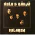

KUUNTELE
Milarca (2006/1975 CD) 
- ENSI KAINO VIENO YRITYS
- JOS MULLA OIS SUT
- KARTSAN KUNINGAS
- LUMEEN HUKKUNUT
- MA TAHDON VAIHTAA NAISTA
- MILARCA
- MUISTELEN TILIÄNI TAAS
- NAARAS
- TAHDON SAADA PAULAN TAKAISIN
- SUVIAAMU
- TIPPURI TIINA
- HÄMÄRYYS
Top Of The Flops (1997 CD) 
- PARFYYMISI TUOKSU
- PYSY VIERELLÄIN
- TAHDON SAADA PAULANI TAKAISIN
- PORTTI
- ENSI KAINO VIENO YRITYS
- OODI
- LUMEEN HUKKUNUT
- PILVET
- RAKKAHIN REGGAE
- MILARCA
- SALAINEN RAKKAIN
- JOS MULLA OIS SUT
- HÄMÄRYYS
- TURHAA ELÄMÄÄ
Maanantai Nainen (2002 CD) 
- RAKASTIN LIIKAA
- HIEKKALINNA
- MAANANTAI NAINEN
- RONSKI ANTTI
- MENI BÄNKS MENI TÄNKS
- TEQUILABAARI
- LUOKSES TUUN
- OLUT, LAULU SEKÄ NAISET
- SATIAINEN
- ETELÄÄN
- IKIOMAT BILEET
- SULOKUVAMALLI
- RAKASTATKO VIELÄ
- TERVEISIÄ TAINALTA
Rakkautesi erämailla (2008 CD) 
- RAKKAUTESI ERÄMAILLA
- PIMEÄT KADUT
- LOXODONTA
- LIIMAVARASTO BLUES
- SINÄ YÖNÄ
- PORTTI
- MATKA IHMISYYTEEN
- KOITAN YMMÄRTÄÄ
- LIISA
- SOUTAJA
- YÖSSÄ TAMPEREEN
- HENKÄYS VAPAUDESTA
Valtaa, kunniaa ja rahaa (2012 CD) 
- VALTAA, KUNNIAA JA RAHAA
- KENKÄ KÄDESSÄ
- REISKA, MAZDA JA MÄ
- PARFYYMISI TUOKSUU VIELÄKIN
- RAHAA KUIN ROSKAA
- NAINEN TAULUSSAIN
- JOS OSAA KUUNNELLA
- ROKKI ANTAA KAIKEN
- TUNTEMATON KANSALAINEN
- MUSTA ENKELI
- PIKONLINNA
Taivaan mannaa - tai vaan mannaa (2015 CD) 
- TAIVAAN MANNAA
- MUIHIN NAISIIN
- LEVOTON
- RAUMANLINNA
- PIDÄ NAAMAS KII
- KORKIT AUKI
- PRIMITIIVIHUMPPA
- MUSTAA JA VALKOISTA
- TÄNÄ SYKSYNÄ
- MANSIKKAPELLOT
- KUN IHMINEN MENEE RIKKI
- AVARUUSLIMBO